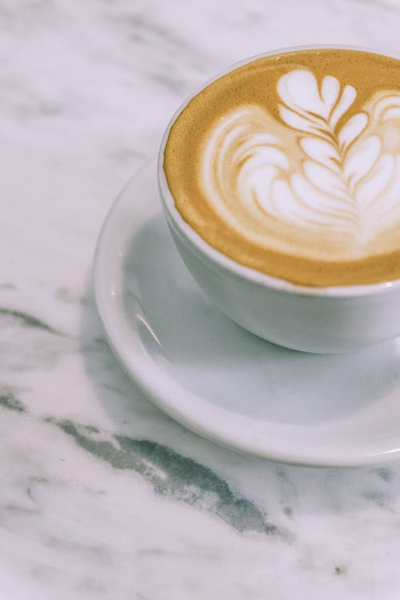

ITEMS TO QUENCH YOUR THIRST:
House Blend Coffee
House Blend coffee is unique to every coffee shop, every roaster, and every drinker. That is what makes them so uniqueand so special. The blending and serving process is built entirely on the preference of the roaster and/or distributor. For example, Starbucks describes their House Blend as “the very first blend we ever created for you back in 1971.Theone blend that set the course for the way our master blenders and roasters work even today. A true reflection of us and delicious cup of coffee, period.”
DetailsFrench Roast Coffee

Our darkest roasted coffee, the French Roast is a blend best enjoyed black for those who like their coffee bold, like atraditional espresso with bittersweet notes. If you’re looking to add milk and still retain a definite bite, this is a great choice.We recommend brewing this as an espresso or using manual brewing equipment such as Moka Pot, Frenc Press or South Indian filter.
DetailsColombian Roast Coffee

Our organic Colombian coffee comes in both dark and medium roasts. It is full-bodied with tones of citrus and ripefruit, with the dark roast offering a rich bittersweetness. Our Loring coffee roaster employs clean roasting technology which enhances this coffee’s subtleties.Our beans come from the Huila department of Colombia, a region of small coffee farms in the shadow of the Nevado del Huila volcano. Rich volcanic soil combined with optimal climate and altitude are the necessary elements for growing excellent coffee. This cooperative of small farms grows mostly caturra and colombia varietals, which are pulped,fermented for 24 hours, and fully washed resulting in a smooth complex cup.
Details